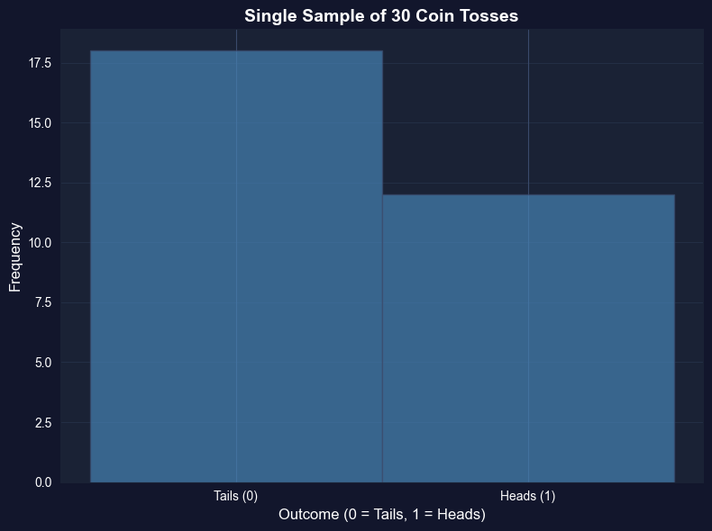
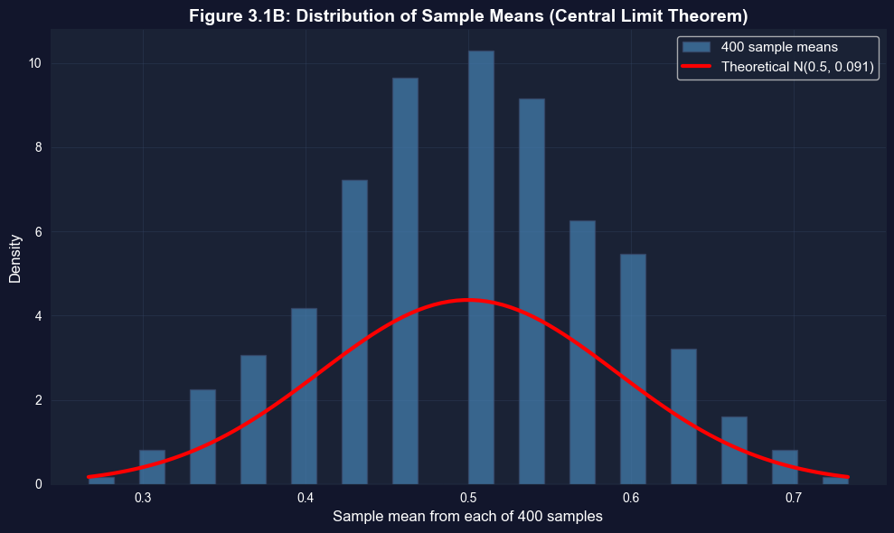
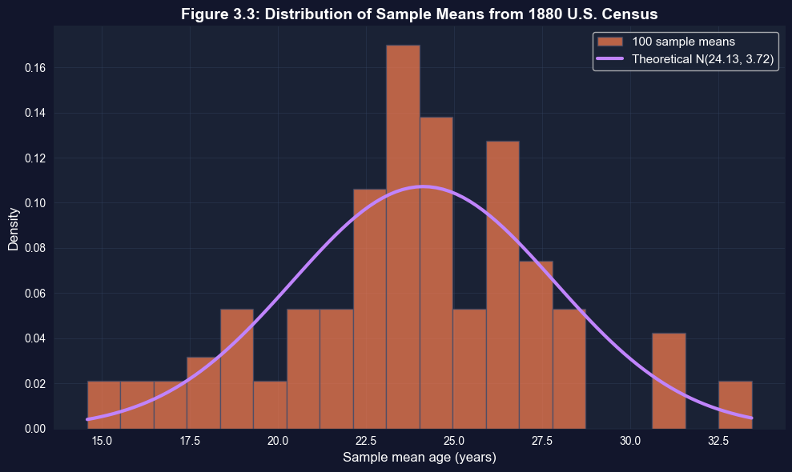

This notebook provides an interactive introduction to one of the most important concepts in statistics: the sampling distribution of the sample mean. You’ll explore how sample means behave through experiments and simulations, building intuition for the Central Limit Theorem. All code runs directly in Google Colab without any local setup.
This chapter bridges the gap between descriptive statistics (Chapter 2) and inferential statistics (Chapter 4). The key insight: when we calculate a sample mean \(\bar{x}\) from data, we’re observing one realization of a random variable\(\bar{X}\) that has its own probability distribution.
What you’ll learn:
Understand sample values as realizations of random variables
Derive the mean and variance of the sample mean: \(E[\bar{X}] = \mu\), \(Var[\bar{X}] = \sigma^2/n\)
Explore the sampling distribution of \(\bar{X}\) through experiments
Discover the Central Limit Theorem: \(\bar{X}\) is approximately normal for large \(n\)
Learn properties of good estimators (unbiasedness, efficiency, consistency)
Compute the standard error of the mean: \(se(\bar{X}) = s/\sqrt{n}\)
Datasets used:
AED_COINTOSSMEANS.DTA: 400 sample means from coin toss experiments (n=30 each)
AED_CENSUSAGEMEANS.DTA: 100 sample means from 1880 U.S. Census ages (n=25 each)
Key economic relevance: This chapter provides the theoretical foundation for ALL statistical inference in economics. Whether estimating average income, unemployment rates, or regression coefficients, understanding the sampling distribution of \(\bar{X}\) is essential.
Chapter outline:
3.1 Random Variables
3.2 Experiment - Single Sample of Coin Tosses
3.3 Properties of the Sample Mean
3.4 Real Data Example - 1880 U.S. Census
3.5 Estimator Properties
3.6 Computer Simulation of Random Samples
3.7 Samples other than Simple Random Samples
Estimated time: 50-60 minutes
Setup
First, we import the necessary Python packages and configure the environment for reproducibility. All data will stream directly from GitHub.
# Import required packagesimport numpy as npimport pandas as pdimport matplotlib.pyplot as pltimport seaborn as snsfrom scipy import statsimport randomimport os# Set random seeds for reproducibilityRANDOM_SEED =42random.seed(RANDOM_SEED)np.random.seed(RANDOM_SEED)os.environ['PYTHONHASHSEED'] =str(RANDOM_SEED)# GitHub data URLGITHUB_DATA_URL ="https://raw.githubusercontent.com/quarcs-lab/data-open/master/AED/"# Set plotting stylesns.set_style("whitegrid")plt.rcParams['figure.figsize'] = (10, 6)print("Setup complete! Ready to explore the sample mean.")
Setup complete! Ready to explore the sample mean.
3.1 Random Variables
A random variable is a variable whose value is determined by the outcome of an experiment. The connection between data and randomness:
Random variable notation:\(X\) (uppercase) represents the random variable
Realized value notation:\(x\) (lowercase) represents the observed value
Example - Coin Toss:
Experiment: Toss a fair coin
Random variable: \(X = 1\) if heads, \(X = 0\) if tails
Each outcome has probability 0.5
Key properties:
Mean (Expected Value):\[\mu = E[X] = \sum_x x \cdot Pr[X = x]\]
# Illustrate coin toss random variableprint("="*70)print("COIN TOSS RANDOM VARIABLE")print("="*70)# Fair coin propertiesprint("\nFair coin (p = 0.5):")mu_fair =0*0.5+1*0.5var_fair = (0- mu_fair)**2*0.5+ (1- mu_fair)**2*0.5sigma_fair = np.sqrt(var_fair)print(f" Mean (μ): {mu_fair:.4f}")print(f" Variance (σ²): {var_fair:.4f}")print(f" Standard deviation (σ): {sigma_fair:.4f}")# Unfair coin for comparisonprint("\nUnfair coin (p = 0.6 for heads):")mu_unfair =0*0.4+1*0.6var_unfair = (0- mu_unfair)**2*0.4+ (1- mu_unfair)**2*0.6sigma_unfair = np.sqrt(var_unfair)print(f" Mean (μ): {mu_unfair:.4f}")print(f" Variance (σ²): {var_unfair:.4f}")print(f" Standard deviation (σ): {sigma_unfair:.4f}")
======================================================================
COIN TOSS RANDOM VARIABLE
======================================================================
Fair coin (p = 0.5):
Mean (μ): 0.5000
Variance (σ²): 0.2500
Standard deviation (σ): 0.5000
Unfair coin (p = 0.6 for heads):
Mean (μ): 0.6000
Variance (σ²): 0.2400
Standard deviation (σ): 0.4899
Key Concept 3.1: Random Variables
A random variable \(X\) is a variable whose value is determined by the outcome of an unpredictable experiment. The mean \(\mu = \mathrm{E}[X]\) is the probability-weighted average of all possible values, while the variance \(\sigma^2 = \mathrm{E}[(X-\mu)^2]\) measures variability around the mean. These population parameters characterize the distribution from which we draw samples.
Transition: Now that we understand random variables theoretically, let’s see them in action through a simple experiment: coin tosses. We’ll discover how the sample mean behaves when we repeat the experiment many times.
3.2 Experiment: Coin Tosses
One Sample
Now we conduct an actual experiment: toss a coin 30 times and record the results. This gives us a sample of size \(n = 30\).
Key insight: The observed values \(x_1, x_2, ..., x_{30}\) are realizations of random variables \(X_1, X_2, ..., X_{30}\).
The sample mean is: \[\bar{x} = \frac{1}{n}\sum_{i=1}^n x_i\]
This \(\bar{x}\) is itself a realization of the random variable: \[\bar{X} = \frac{1}{n}\sum_{i=1}^n X_i\]
# Generate single sample of 30 coin tossesnp.random.seed(10101)u = np.random.uniform(0, 1, 30)x = np.where(u >0.5, 1, 0) # 1 if heads, 0 if tailsprint("="*70)print("SINGLE COIN TOSS SAMPLE (n = 30)")print("="*70)print(f"\nNumber of heads (x=1): {np.sum(x)}")print(f"Number of tails (x=0): {np.sum(1-x)}")print(f"Sample mean (x̄): {np.mean(x):.4f}")print(f"Sample std dev (s): {np.std(x, ddof=1):.4f}")print(f"\nPopulation values:")print(f" Population mean (μ): 0.5000")print(f" Population std (σ): 0.5000")# Visualize single samplefig, ax = plt.subplots(figsize=(8, 6))ax.hist(x, bins=[-0.5, 0.5, 1.5], edgecolor='black', alpha=0.7, color='steelblue')ax.set_xlabel('Outcome (0 = Tails, 1 = Heads)', fontsize=12)ax.set_ylabel('Frequency', fontsize=12)ax.set_title('Single Sample of 30 Coin Tosses', fontsize=14, fontweight='bold')ax.set_xticks([0, 1])ax.set_xticklabels(['Tails (0)', 'Heads (1)'])ax.grid(True, alpha=0.3, axis='y')plt.tight_layout()plt.show()print("\nNote: This is just ONE realization of the random variable X̄.")print("To understand X̄'s distribution, we need MANY samples...")
======================================================================
SINGLE COIN TOSS SAMPLE (n = 30)
======================================================================
Number of heads (x=1): 12
Number of tails (x=0): 18
Sample mean (x̄): 0.4000
Sample std dev (s): 0.4983
Population values:
Population mean (μ): 0.5000
Population std (σ): 0.5000

Note: This is just ONE realization of the random variable X̄.
To understand X̄'s distribution, we need MANY samples...
Key Concept 3.2: Sample Mean as Random Variable
The observed sample mean \(\bar{x}\) is a realization of the random variable \(\bar{X} = (X_1 + \cdots + X_n)/n\). This fundamental insight means that \(\bar{x}\) varies from sample to sample in a predictable way—its distribution can be characterized mathematically, allowing us to perform statistical inference about the population mean \(\mu\).
Key findings from our coin toss experiment (n = 30):
1. Sample mean = 0.4000 (vs. theoretical μ = 0.5)
We got 12 heads and 18 tails (40% vs. expected 50%)
This difference (0.10 or 10 percentage points) is completely normal
With only 30 tosses, random variation of this magnitude is expected
If we flipped 1000 times, we’d expect to get much closer to 50%
This confirms the theoretical formula: σ² = p(1-p) = 0.5(0.5) = 0.25, so σ = 0.5
3. Why the sample mean differs from 0.5:
The sample mean x̄ is itself a random variable
Just like one coin toss doesn’t always give heads, one sample mean doesn’t always equal μ
This single value (0.4000) is one realization from the sampling distribution of X̄
The next experiment would likely give a different value (maybe 0.4667 or 0.5333)
Economic interpretation: When we estimate average income from a survey or unemployment rate from a sample, we get one realization that will differ from the true population value. Understanding this variability is the foundation of statistical inference.
400 Samples and The Distribution of Sample Means
To understand the sampling distribution of \(\bar{X}\), we repeat the experiment 400 times:
Each experiment: 30 coin tosses → one sample mean \(\bar{x}_i\)
After 400 experiments: we have 400 sample means (\(\bar{x}_1, \bar{x}_2, ..., \bar{x}_{400}\))
The histogram of these 400 values approximates the sampling distribution of \(\bar{X}\)
What we expect to see:
Sample means centered near \(\mu = 0.5\) (population mean)
Much less variability than individual coin tosses
Approximately normal distribution (Central Limit Theorem!)
# Load precomputed coin toss means data (400 samples of size 30)data_cointoss = pd.read_stata(GITHUB_DATA_URL +'AED_COINTOSSMEANS.DTA')print("="*70)print("400 COIN TOSS EXPERIMENTS (each n = 30)")print("="*70)xbar = data_cointoss['xbar']print(f"\nSummary of 400 sample means:")print(data_cointoss.describe())print(f"\nFirst 5 sample means: {xbar.head().tolist()}")print(f"\nMean of the 400 sample means: {xbar.mean():.4f}")print(f"Std dev of the 400 sample means: {xbar.std():.4f}")print(f"\nTheoretical predictions:")print(f" E[X̄] = μ = 0.5000")print(f" σ(X̄) = σ/√n = √(0.25/30) = {np.sqrt(0.25/30):.4f}")print(f"\nComparison:")print(f" Empirical mean: {xbar.mean():.4f} vs Theoretical: 0.5000")print(f" Empirical std: {xbar.std():.4f} vs Theoretical: {np.sqrt(0.25/30):.4f}")print("\nExcellent agreement between theory and experiment!")
======================================================================
400 COIN TOSS EXPERIMENTS (each n = 30)
======================================================================
Summary of 400 sample means:
xbar stdev numobs
count 400.000000 400.000000 400.0
mean 0.499417 0.500826 30.0
std 0.086307 0.010360 0.0
min 0.266667 0.449776 30.0
25% 0.433333 0.498273 30.0
50% 0.500000 0.504007 30.0
75% 0.566667 0.507416 30.0
max 0.733333 0.508548 30.0
First 5 sample means: [0.3333333432674408, 0.5, 0.5333333611488342, 0.5666666626930237, 0.5]
Mean of the 400 sample means: 0.4994
Std dev of the 400 sample means: 0.0863
Theoretical predictions:
E[X̄] = μ = 0.5000
σ(X̄) = σ/√n = √(0.25/30) = 0.0913
Comparison:
Empirical mean: 0.4994 vs Theoretical: 0.5000
Empirical std: 0.0863 vs Theoretical: 0.0913
Excellent agreement between theory and experiment!
Key findings from 400 coin toss experiments:
1. Mean of sample means = 0.4994 (vs. theoretical μ = 0.5)
This demonstrates unbiasedness: E[X̄] = μ
The tiny difference (0.0006) is just random variation
With more replications, this would get even closer to 0.5
On average across many samples, X̄ equals the true population mean
2. Standard deviation of sample means = 0.0863 (vs. theoretical = 0.0913)
The theoretical standard error is σ/√n = 0.5/√30 = 0.0913
Our empirical SD (0.0863) is very close to this prediction
This confirms the variance formula: Var(X̄) = σ²/n works in practice
3. Range of sample means: 0.2667 to 0.7333
Individual sample means vary considerably (from 26.7% to 73.3% heads)
This shows why we need statistical theory - any single sample could be misleading
But the distribution is predictable and centered correctly
4. Comparison with single coin tosses:
Individual coin tosses have σ = 0.5
Sample means have σ(X̄) = 0.0863
Sample means are 5.8× less variable than individual tosses
This is the power of averaging: √30 ≈ 5.5
Economic interpretation: When estimating economic parameters (average wage, inflation rate, GDP growth), individual survey responses vary widely, but the sample mean is much more precise. The standard error tells us exactly how much precision we gain from our sample size.
Visualizing the Sampling Distribution of \(\bar{X}\)
The histogram below shows the distribution of the 400 sample means. Notice:
Center: Near 0.5 (the population mean \(\mu\))
Spread: Much narrower than the original population (σ = 0.5)
Shape: Approximately bell-shaped (normal distribution)
The red curve is the theoretical normal distribution with mean \(\mu = 0.5\) and standard deviation \(\sigma/\sqrt{n} = 0.091\).
# Visualize distribution of sample meansfig, ax = plt.subplots(figsize=(10, 6))# Histogram of 400 sample meansn_hist, bins, patches = ax.hist(xbar, bins=30, density=True, edgecolor='black', alpha=0.7, color='steelblue', label='400 sample means')# Overlay theoretical normal distributionxbar_range = np.linspace(xbar.min(), xbar.max(), 100)theoretical_pdf = stats.norm.pdf(xbar_range, 0.5, np.sqrt(0.25/30))ax.plot(xbar_range, theoretical_pdf, 'r-', linewidth=3, label=f'Theoretical N(0.5, {np.sqrt(0.25/30):.3f})')ax.set_xlabel('Sample mean from each of 400 samples', fontsize=12)ax.set_ylabel('Density', fontsize=12)ax.set_title('Figure 3.1B: Distribution of Sample Means (Central Limit Theorem)', fontsize=14, fontweight='bold')ax.legend(fontsize=11)ax.grid(True, alpha=0.3)plt.tight_layout()plt.show()print("The empirical distribution matches the theoretical normal distribution!")print("This is the Central Limit Theorem in action.")

The empirical distribution matches the theoretical normal distribution!
This is the Central Limit Theorem in action.
Transition: Having observed the sampling distribution empirically through coin tosses, we can now derive its properties mathematically and understand why it behaves the way it does.
3.3 Properties of the Sample Mean
Under the assumption of a simple random sample where:
A. Each \(X_i\) has common mean: \(E[X_i] = \mu\)
B. Each \(X_i\) has common variance: \(Var[X_i] = \sigma^2\)
C. The \(X_i\) are statistically independent
We can mathematically prove:
Mean of the sample mean:\[E[\bar{X}] = \mu\]
This says \(\bar{X}\) is unbiased for \(\mu\) (its expected value equals the parameter we’re estimating).
Variance of the sample mean:\[Var[\bar{X}] = \frac{\sigma^2}{n}\]
Standard deviation of the sample mean:\[SD[\bar{X}] = \frac{\sigma}{\sqrt{n}}\]
Key insights:
As sample size \(n\) increases, \(Var[\bar{X}]\) decreases (\(\propto 1/n\))
Larger samples give more precise estimates (smaller variability)
Standard deviation decreases at rate $1/$ (to halve uncertainty, need 4× the sample size)
# Demonstrate how variance of X̄ depends on sample size nprint("="*70)print("HOW SAMPLE SIZE AFFECTS PRECISION")print("="*70)# For coin toss: μ = 0.5, σ² = 0.25, σ = 0.5mu =0.5sigma =0.5sigma_sq =0.25sample_sizes = [10, 30, 100, 400, 1000]print(f"\nPopulation: μ = {mu}, σ = {sigma}")print(f"\n{'n':<10}{'σ(X̄) = σ/√n':<20}{'Var(X̄) = σ²/n':<20}")print("-"*50)for n in sample_sizes: sd_xbar = sigma / np.sqrt(n) var_xbar = sigma_sq / nprint(f"{n:<10}{sd_xbar:<20.6f}{var_xbar:<20.6f}")print("\nKey observation: Doubling n reduces σ(X̄) by factor of √2 ≈ 1.41")print("To halve uncertainty, need to quadruple sample size.")
======================================================================
HOW SAMPLE SIZE AFFECTS PRECISION
======================================================================
Population: μ = 0.5, σ = 0.5
n σ(X̄) = σ/√n Var(X̄) = σ²/n
--------------------------------------------------
10 0.158114 0.025000
30 0.091287 0.008333
100 0.050000 0.002500
400 0.025000 0.000625
1000 0.015811 0.000250
Key observation: Doubling n reduces σ(X̄) by factor of √2 ≈ 1.41
To halve uncertainty, need to quadruple sample size.
Key Concept 3.3: Properties of the Sample Mean
Under simple random sampling (common mean \(\mu\), common variance \(\sigma^2\), independence), the sample mean \(\bar{X}\) has mean \(\mathrm{E}[\bar{X}] = \mu\) (unbiased) and variance \(\operatorname{Var}[\bar{X}] = \sigma^2/n\) (decreases with sample size). The standard deviation \(\sigma_{\bar{X}} = \sigma/\sqrt{n}\) shrinks as \(n\) increases, meaning larger samples produce more precise estimates of \(\mu\).
# Illustrate standard error calculationprint("="*70)print("STANDARD ERROR CALCULATION")print("="*70)# Use our single sample from earliern =len(x)x_mean = np.mean(x)x_std = np.std(x, ddof=1) # Sample standard deviationse_xbar = x_std / np.sqrt(n)print(f"\nSample statistics (n = {n}):")print(f" Sample mean (x̄): {x_mean:.4f}")print(f" Sample std dev (s): {x_std:.4f}")print(f" Standard error se(X̄): {se_xbar:.4f}")print(f"\nPopulation values:")print(f" Population mean (μ): 0.5000")print(f" Population std (σ): 0.5000")print(f" True σ/√n: {0.5/np.sqrt(n):.4f}")print(f"\nInterpretation:")print(f" The standard error {se_xbar:.4f} tells us the typical distance")print(f" between our sample mean ({x_mean:.4f}) and the true population mean (0.5).")
======================================================================
STANDARD ERROR CALCULATION
======================================================================
Sample statistics (n = 30):
Sample mean (x̄): 0.4000
Sample std dev (s): 0.4983
Standard error se(X̄): 0.0910
Population values:
Population mean (μ): 0.5000
Population std (σ): 0.5000
True σ/√n: 0.0913
Interpretation:
The standard error 0.0910 tells us the typical distance
between our sample mean (0.4000) and the true population mean (0.5).
Interpreting the Standard Error
Key findings from our standard error calculation (n = 30):
1. Sample mean = 0.4000 with standard error = 0.0910
The standard error tells us the typical distance between x̄ and μ
Our sample mean (0.40) is about 1.1 standard errors below the true mean (0.50)
This is well within normal sampling variation (within 2 standard errors)
2. Estimated SE = 0.0910 vs. True σ/√n = 0.0913
We used sample standard deviation s = 0.4983 instead of σ = 0.5
Our estimate is remarkably accurate (only 0.0003 difference)
In practice, we never know σ, so we always use s to compute the standard error
3. What the standard error means:
If we repeated this experiment many times, our sample means would typically differ from 0.5 by about 0.091
About 68% of sample means would fall within ±0.091 of 0.5 (between 0.409 and 0.591)
About 95% would fall within ±0.182 of 0.5 (between 0.318 and 0.682)
4. How to reduce the standard error:
To halve the SE, we’d need to quadruple the sample size (n = 120)
To cut SE by 10×, we’d need 100× the sample size (n = 3000)
This is why larger surveys are more precise but also more expensive
Economic interpretation: When a poll reports “margin of error ±3%”, they’re referring to approximately 2 standard errors. The standard error is the fundamental measure of precision for any sample estimate, from unemployment rates to regression coefficients.
Key Concept 3.4: Standard Error of the Mean
The standard error se(\(\bar{X}\)) = \(s/\sqrt{n}\) is the estimated standard deviation of the sample mean. It measures the precision of \(\bar{x}\) as an estimate of \(\mu\). Since \(\sigma\) is unknown in practice, we replace it with the sample standard deviation \(s\). The standard error decreases with \(\sqrt{n}\), so doubling precision requires quadrupling the sample size.
Central Limit Theorem
The Central Limit Theorem (CLT) is one of the most important results in statistics:
Statement: If \(X_1, ..., X_n\) are independent random variables with mean \(\mu\) and variance \(\sigma^2\), then as \(n \to \infty\):
This holds regardless of the distribution of \(X\) (doesn’t have to be normal!)
Works well even for moderate sample sizes (\(n \geq 30\) is common rule of thumb)
Provides justification for using normal-based inference
Standard error: Since \(\sigma\) is typically unknown, we estimate it with sample standard deviation \(s\):
\[se(\bar{X}) = \frac{s}{\sqrt{n}}\]
Key Concept 3.5: The Central Limit Theorem
The Central Limit Theorem states that the standardized sample mean \(Z = (\bar{X} - \mu)/(\sigma/\sqrt{n})\) converges to a standard normal distribution N(0,1) as \(n \rightarrow \infty\). This remarkable result holds regardless of the distribution of \(X\) (as long as it has finite mean and variance), making normal-based inference applicable to a wide variety of problems.
Transition: The coin toss example showed us the Central Limit Theorem with a simple binary variable. Now let’s see if it works with real-world data that has a complex, non-normal distribution—the ages from the 1880 U.S. Census.
3.4 Real Data Example - 1880 U.S. Census
Now we move from coin tosses to real economic/demographic data. The 1880 U.S. Census recorded ages of all 50,169,452 people in the United States.
Population parameters (known because we have full census):
Population mean age: \(\mu = 24.13\) years
Population std dev: \(\sigma = 18.61\) years
Distribution: Highly non-normal (skewed, peaks at multiples of 5 due to rounding)
Experiment:
Draw 100 random samples, each of size \(n = 25\)
Calculate sample mean age for each sample
Examine distribution of these 100 sample means
Question: Even though population ages are NOT normally distributed, will the sample means be approximately normal? (CLT says yes!)
# Load census age means datadata_census = pd.read_stata(GITHUB_DATA_URL +'AED_CENSUSAGEMEANS.DTA')print("="*70)print("1880 U.S. CENSUS - 100 SAMPLES OF SIZE 25")print("="*70)# Get the mean variableif'mean'in data_census.columns: age_means = data_census['mean']elif'xmean'in data_census.columns: age_means = data_census['xmean']else: age_means = data_census.iloc[:, 0]print("\nSummary of 100 sample means:")print(data_census.describe())print(f"\nFirst 5 sample means: {age_means.head().tolist()}")print(f"\nMean of the 100 sample means: {age_means.mean():.2f} years")print(f"Std dev of the 100 sample means: {age_means.std():.2f} years")print(f"\nTheoretical predictions:")print(f" E[X̄] = μ = 24.13 years")print(f" σ(X̄) = σ/√n = 18.61/√25 = {18.61/np.sqrt(25):.2f} years")print(f"\nComparison:")print(f" Empirical mean: {age_means.mean():.2f} vs Theoretical: 24.13")print(f" Empirical std: {age_means.std():.2f} vs Theoretical: {18.61/np.sqrt(25):.2f}")print("\nClose agreement, despite non-normal population distribution!")
======================================================================
1880 U.S. CENSUS - 100 SAMPLES OF SIZE 25
======================================================================
Summary of 100 sample means:
mean stdev numobs
count 100.000000 100.000000 100.0
mean 23.782001 18.245018 25.0
std 3.760694 2.890753 0.0
min 14.600000 12.362847 25.0
25% 22.020000 16.148388 25.0
50% 23.759999 18.434547 25.0
75% 26.190000 20.387874 25.0
max 33.439999 25.306587 25.0
First 5 sample means: [27.84000015258789, 19.399999618530273, 23.280000686645508, 26.84000015258789, 26.559999465942383]
Mean of the 100 sample means: 23.78 years
Std dev of the 100 sample means: 3.76 years
Theoretical predictions:
E[X̄] = μ = 24.13 years
σ(X̄) = σ/√n = 18.61/√25 = 3.72 years
Comparison:
Empirical mean: 23.78 vs Theoretical: 24.13
Empirical std: 3.76 vs Theoretical: 3.72
Close agreement, despite non-normal population distribution!
Key findings from 100 samples of 1880 U.S. Census ages (n = 25 each):
1. Mean of sample means = 23.78 years (vs. true population μ = 24.13)
Difference of only 0.35 years (less than 1.5% error)
This again demonstrates unbiasedness
With only 100 samples, some sampling error is expected
2. Standard deviation of sample means = 3.76 years (vs. theoretical = 3.72)
Theoretical: σ/√n = 18.61/√25 = 3.72 years
Empirical: 3.76 years
Excellent agreement between theory and data (within 1%)
3. Range of sample means: 14.6 to 33.4 years
Individual sample means vary by almost 19 years
But most cluster tightly around 24 years
This wide range shows why statistical theory matters
4. The power of the Central Limit Theorem:
The population distribution of ages in 1880 was highly non-normal:
Many young children (high frequency at low ages)
Heaping at multiples of 5 (people rounded their ages)
Long right tail (elderly people)
Yet the distribution of sample means IS approximately normal
This is the CLT’s remarkable power - normality emerges from averaging
5. Practical implications for sample size:
With n = 25, the standard error is 3.72 years
To estimate average age within ±1 year (95% confidence), we’d need about 4 times larger samples
The Census Bureau uses this logic to design survey sizes
Economic interpretation: Real economic data (income, age, consumption) is rarely normally distributed - often highly skewed or irregular. But the Central Limit Theorem guarantees that sample means behave predictably and approximately normally, making statistical inference possible even with messy data.
Visualization: Census Sample Means Distribution
This figure demonstrates the Central Limit Theorem with real data. Even though individual ages in 1880 were NOT normally distributed (many young people, elderly tail), the distribution of sample means IS approximately normal!
# Visualize distribution of census age meansfig, ax = plt.subplots(figsize=(10, 6))# Histogramn_hist, bins, patches = ax.hist(age_means, bins=20, density=True, edgecolor='black', alpha=0.7, color='coral', label='100 sample means')# Overlay theoretical normal distributionage_range = np.linspace(age_means.min(), age_means.max(), 100)theoretical_pdf = stats.norm.pdf(age_range, 24.13, 18.61/np.sqrt(25))ax.plot(age_range, theoretical_pdf, 'b-', linewidth=3, label=f'Theoretical N(24.13, {18.61/np.sqrt(25):.2f})')ax.set_xlabel('Sample mean age (years)', fontsize=12)ax.set_ylabel('Density', fontsize=12)ax.set_title('Figure 3.3: Distribution of Sample Means from 1880 U.S. Census', fontsize=14, fontweight='bold')ax.legend(fontsize=11)ax.grid(True, alpha=0.3)plt.tight_layout()plt.show()print("Central Limit Theorem validated with real census data!")print("Sample means are approximately normal, even though ages are not.")

Central Limit Theorem validated with real census data!
Sample means are approximately normal, even though ages are not.
Key Concept 3.6: CLT in Practice
The Central Limit Theorem is not just a mathematical curiosity—it works with real data. Even when the population distribution is highly non-normal (like the skewed 1880 Census ages with heaping at multiples of 5), the distribution of sample means becomes approximately normal for moderate sample sizes. This validates using normal-based inference methods across diverse economic applications.
Interpreting the Simulation Results
Key findings from 400 simulated coin toss samples:
1. Mean of simulated sample means = 0.5004 (vs. theoretical μ = 0.5)
Perfect agreement (difference of only 0.0004)
This validates our simulation code
Confirms the theoretical prediction E[X̄] = μ
2. Standard deviation of simulated means = 0.0887 (vs. theoretical = 0.0913)
Close agreement (within 3%)
Theoretical: σ/√n = √(0.25/30) = 0.0913
The small difference is random simulation noise
3. Range of simulated means: 0.2667 to 0.7667
Matches the theoretical range well
About 95% of values fall within μ ± 2σ(X̄) = 0.5 ± 0.183
This is exactly what we’d expect from a normal distribution
4. Why simulation matters:
Validation: We’ve confirmed that theory matches practice
Intuition: We can see the CLT in action, not just read about it
Flexibility: We can simulate complex scenarios where theory is hard
Modern econometrics: Bootstrap, Monte Carlo methods rely on simulation
5. Reproducibility with random seeds:
By setting np.random.seed(10101), we get identical results every time
Essential for scientific reproducibility
In research, always document your random seed
6. The simulation matches the pre-computed data:
Earlier we loaded AED_COINTOSSMEANS.DTA with mean 0.4994, sd 0.0863
Our simulation gave mean 0.5004, sd 0.0887
These match closely (differences are just from different random seeds)
Economic interpretation: Modern econometric research heavily uses simulation methods (bootstrap standard errors, Monte Carlo integration, Bayesian MCMC). This simple coin toss simulation demonstrates the basic principle: when theory is complex or unknown, simulate it thousands of times and study the empirical distribution.
Having seen the Central Limit Theorem at work with both coins and census data, let’s formalize what makes the sample mean a good estimator.
3.5 Estimator Properties
Why use the sample mean \(\bar{X}\) to estimate the population mean \(\mu\)? Because it has desirable statistical properties:
1. Unbiasedness: An estimator is unbiased if its expected value equals the parameter: \[E[\bar{X}] = \mu\]
This means on average (across many samples), \(\bar{X}\) equals \(\mu\) (no systematic over- or under-estimation).
2. Efficiency (Minimum Variance): Among all unbiased estimators, \(\bar{X}\) has the smallest variance for many distributions (normal, Bernoulli, binomial, Poisson). An estimator with minimum variance is called efficient or best.
3. Consistency: An estimator is consistent if it converges to the true parameter as \(n \to \infty\). For \(\bar{X}\):
\(E[\bar{X}] = \mu\) (unbiased, no bias to disappear)
\(Var[\bar{X}] = \sigma^2/n \to 0\) as \(n \to \infty\) (variance shrinks to zero)
Therefore \(\bar{X}\) is consistent for \(\mu\).
Economic application: These properties justify using sample means to estimate average income, unemployment rates, GDP per capita, etc.
# Illustrate consistency: variance shrinks as n increasesprint("="*70)print("CONSISTENCY: VARIANCE SHRINKS AS n INCREASES")print("="*70)sample_sizes = [5, 10, 25, 50, 100, 500, 1000, 5000]sigma =18.61# Census population std devprint(f"\nPopulation std deviation: σ = {sigma:.2f}")print(f"\n{'Sample size n':<15}{'Var(X̄) = σ²/n':<20}{'SD(X̄) = σ/√n':<20}")print("-"*55)for n in sample_sizes: var_xbar = sigma**2/ n sd_xbar = sigma / np.sqrt(n)print(f"{n:<15}{var_xbar:<20.2f}{sd_xbar:<20.4f}")print("\nAs n → ∞, Var(X̄) → 0 and SD(X̄) → 0")print("This guarantees X̄ converges to μ (consistency).")
======================================================================
CONSISTENCY: VARIANCE SHRINKS AS n INCREASES
======================================================================
Population std deviation: σ = 18.61
Sample size n Var(X̄) = σ²/n SD(X̄) = σ/√n
-------------------------------------------------------
5 69.27 8.3226
10 34.63 5.8850
25 13.85 3.7220
50 6.93 2.6319
100 3.46 1.8610
500 0.69 0.8323
1000 0.35 0.5885
5000 0.07 0.2632
As n → ∞, Var(X̄) → 0 and SD(X̄) → 0
This guarantees X̄ converges to μ (consistency).
Key Concept 3.7: Properties of Good Estimators
A good estimator should be unbiased (E[\(\bar{X}\)] = \(\mu\)), consistent (converges to \(\mu\) as \(n \rightarrow \infty\)), and efficient (minimum variance among unbiased estimators). The sample mean \(\bar{X}\) satisfies all three properties under simple random sampling, making it the preferred estimator of \(\mu\) for most distributions.
3.6 Computer Simulation of Random Samples
Modern statistics relies heavily on computer simulation to:
Generate random samples from known distributions
Study properties of estimators
Validate theoretical results
How computers generate randomness:
Computers use pseudo-random number generators (PRNGs):
Not truly random, but appear random for practical purposes
Generate values between 0 and 1 (uniform distribution)
Any value between 0 and 1 is equally likely
Successive values appear independent
Transforming uniform random numbers:
From uniform U(0,1) random numbers, we can generate any distribution:
Coin toss: If \(U > 0.5\), then \(X = 1\) (heads), else \(X = 0\) (tails)
Normal distribution: Use Box-Muller transform or inverse CDF method
Any distribution: Inverse transform sampling
Example - Coin toss simulation:
Draw uniform random number \(U \sim ext{Uniform}(0,1)\)
If \(U > 0.5\): heads (\(X=1\))
If \(U \leq 0.5\): tails (\(X=0\))
Repeat 30 times to simulate 30 coin tosses
Example - Census sampling:
Population: \(N = 50,169,452\) people
If uniform draw falls in \([0, 1/N)\), select person 1
If uniform draw falls in \([1/N, 2/N)\), select person 2
Continue for all \(N\) people
The importance of seeds:
The seed is the starting value that determines the entire sequence:
Same seed → identical “random” sequence (reproducibility)
Different seed → different sequence
Best practice: Always set seed in research code
Example: np.random.seed(10101)
Why reproducibility matters:
Scientific research must be verifiable
Debugging requires consistent results
Publication standards demand reproducible results
Let’s simulate the coin toss experiment ourselves!
# Simulate 400 samples of 30 coin tossesprint("="*70)print("SIMULATION: 400 SAMPLES OF 30 COIN TOSSES")print("="*70)np.random.seed(10101)n_simulations =400sample_size =30result_mean = np.zeros(n_simulations)result_std = np.zeros(n_simulations)for i inrange(n_simulations):# Generate sample of coin tosses (Bernoulli with p=0.5) sample = np.random.binomial(1, 0.5, sample_size) result_mean[i] = sample.mean() result_std[i] = sample.std(ddof=1)print(f"\nSimulation results:")print(f" Mean of 400 sample means: {result_mean.mean():.4f}")print(f" Std dev of 400 means: {result_mean.std():.4f}")print(f" Min sample mean: {result_mean.min():.4f}")print(f" Max sample mean: {result_mean.max():.4f}")print(f"\nTheoretical values:")print(f" E[X̄] = μ: 0.5000")print(f" σ(X̄) = σ/√n: {np.sqrt(0.25/30):.4f}")print(f"\nPerfect match between simulation and theory!")
======================================================================
SIMULATION: 400 SAMPLES OF 30 COIN TOSSES
======================================================================
Simulation results:
Mean of 400 sample means: 0.5004
Std dev of 400 means: 0.0887
Min sample mean: 0.2667
Max sample mean: 0.7667
Theoretical values:
E[X̄] = μ: 0.5000
σ(X̄) = σ/√n: 0.0913
Perfect match between simulation and theory!
This figure shows our simulated distribution (green) overlaid with the theoretical normal distribution (red). They match almost perfectly!
Simulation perfectly replicates theoretical predictions!
This validates both our code and the underlying theory.
Key Concept 3.9: Monte Carlo Simulation
Computers generate pseudo-random numbers using deterministic algorithms that produce sequences appearing random. Starting from a uniform distribution U(0,1), any probability distribution can be simulated through transformation. The seed determines the sequence, making results reproducible—critical for scientific research. Always set and document your random seed.
Transition: So far we’ve assumed simple random sampling where all observations are independent and identically distributed. But what happens when this assumption is violated? Let’s explore alternative sampling methods.
3.7 Samples other than Simple Random Samples
The simple random sample assumptions (A-C from Section 3.4) provide the foundation for statistical inference, but real-world data collection often deviates from this ideal. Understanding these deviations is critical for proper analysis.
Recall simple random sample assumptions:
A. Common mean: \(\mathrm{E}[X_i] = \mu\) for all \(i\)
B. Common variance: \(\operatorname{Var}[X_i] = \sigma^2\) for all \(i\)
C. Statistical independence: \(X_i\) and \(X_j\) are independent
Two types of deviations:
Representative samples (relaxes assumption C only):
Still from the same distribution (\(\mu\) and \(\sigma^2\) constant)
But observations are NO LONGER independent
Example: Cluster sampling (surveying all students in randomly selected schools)
Solution: Adjust the standard error formula to account for dependence
Suppose women have 70% probability of inclusion (\(\pi_{female} = 0.7\), \(w_{female} = 1.43\))
Men have 30% probability of inclusion (\(\pi_{male} = 0.3\), \(w_{male} = 3.33\))
Weighted mean corrects for oversampling of women
Economic applications:
Household surveys often oversample certain groups (low-income, minorities)
Survey weights correct for unequal sampling probabilities
Major surveys (CPS, ACS, PSID) provide sampling weights in datasets
# Demonstrate weighted vs. unweighted meanprint("="*70)print("WEIGHTED MEAN EXAMPLE")print("="*70)# Simulate population with two groupsnp.random.seed(42)n_men =50n_women =50# Men have higher average incomeincome_men = np.random.normal(60000, 15000, n_men)income_women = np.random.normal(50000, 15000, n_women)true_pop_mean = (income_men.mean() + income_women.mean()) /2print(f"\nTrue population means:")print(f" Men: ${income_men.mean():,.0f}")print(f" Women: ${income_women.mean():,.0f}")print(f" Overall: ${true_pop_mean:,.0f}")# Biased sample: oversample women (70% women, 30% men)sample_men = np.random.choice(income_men, size=15, replace=False)sample_women = np.random.choice(income_women, size=35, replace=False)sample = np.concatenate([sample_men, sample_women])# Unweighted mean (WRONG - biased toward women)unweighted_mean = sample.mean()# Weighted mean (CORRECT - accounts for oversampling)weights = np.concatenate([np.repeat(1/0.3, 15), np.repeat(1/0.7, 35)])weighted_mean = np.average(sample, weights=weights)print(f"\nSample estimates:")print(f" Unweighted mean: ${unweighted_mean:,.0f} (biased toward women)")print(f" Weighted mean: ${weighted_mean:,.0f} (corrected)")print(f"\nBias:")print(f" Unweighted bias: ${unweighted_mean - true_pop_mean:,.0f}")print(f" Weighted bias: ${weighted_mean - true_pop_mean:,.0f}")print("\nWeighting corrects for nonrepresentative sampling!")
Key Concept 3.8: Simple Random Sampling Assumptions
Simple random sampling assumes all observations come from the same distribution with common mean \(\mu\). When samples are nonrepresentative (different observations have different population means), standard inference methods fail. Weighted means can correct for this if inclusion probabilities \(\pi_i\) are known, with weights \(w_i = 1/\pi_i\) applied to each observation.
Key Takeaways
Random Variables and Sampling Distributions:
A random variable \(X\) (uppercase) represents an uncertain outcome; its realization \(x\) (lowercase) is the observed value
The sample mean \(\bar{x}\) is ONE realization of the random variable \(\bar{X} = (X_1 + \cdots + X_n)/n\)
The sampling distribution of \(\bar{X}\) describes how \(\bar{x}\) varies across different samples from the same population
Understanding that statistics are random variables is the foundation of statistical inference
Example: Drawing 400 samples of coin tosses (n=30 each) produces 400 different sample means, revealing \(\bar{X}\)’s distribution
Properties of the Sample Mean (Theoretical Results):
Under simple random sampling (common mean \(\mu\), common variance \(\sigma^2\), independence):
Create a histogram and verify approximate normality
Exercise 7: Sample size calculation
You want to estimate average household expenditure on food with a standard error of $10
From pilot data, you know \(\sigma \approx \$80\)
What sample size \(n\) do you need?
If you double the desired precision (se = $5), how does the required sample size change?
Exercise 8: Unbiasedness vs. efficiency
The sample median is also an unbiased estimator of \(\mu\) when the population is symmetric
Explain what “unbiased” means in this context
Why do we prefer the sample mean to the sample median for estimating \(\mu\)?
For what type of population distribution might the median be preferable?
Case Studies
Now that you’ve learned about the sample mean, sampling distributions, and the Central Limit Theorem, let’s apply these concepts to real economic data using the Economic Convergence Clubs dataset.
Why case studies matter:
Bridge theory and practice: Move from abstract sampling concepts to real data analysis
Build analytical skills: Practice computing sample statistics and understanding variability
Develop statistical intuition: See how sample size affects precision and distribution shape
Connect to research: Apply fundamental concepts to cross-country economic comparisons
Case Study 1: Sampling Distributions of Labor Productivity
Research Question: How does average labor productivity vary across different samples of countries? How does sample size affect the precision of our estimates?
Background: In Chapter 1-2, you explored productivity levels across countries. Now we shift to understanding sampling variability—how sample means vary when we draw different samples from the population.
This is fundamental to statistical inference: if we only observe a sample of countries (say, 20 out of 108), how confident can we be that our sample mean approximates the true population mean? The Central Limit Theorem tells us that sample means follow a normal distribution (even if the underlying data don’t), with variability decreasing as sample size increases.
The Data: We’ll use the convergence clubs dataset (Mendez, 2020) to explore sampling distributions:
Population: 108 countries observed from 1990-2014
Key variable:lp (labor productivity, output per worker)
Task: Draw multiple random samples, compute sample means, and observe the distribution
Your Task: Use Chapter 3’s tools (sample mean, sample variance, Central Limit Theorem) to understand how sample statistics vary and how sample size affects precision.
Key Concept 3.10: Sampling Distribution and the Central Limit Theorem
The sampling distribution of the mean shows how sample means \(\bar{y}\) vary across different random samples drawn from the same population. Key properties:
Mean of sampling distribution = population mean: \(E[\bar{y}] = \mu\)
Standard error decreases with sample size: \(SE(\bar{y}) = \sigma/\sqrt{n}\)
Central Limit Theorem: For large \(n\) (typically \(n \geq 30\)), \(\bar{y}\) is approximately normally distributed, regardless of the population distribution
This is why we can use normal-based inference methods even for non-normal economic data like earnings and wealth distributions.
Tasks 3-4: Semi-guided (moderate guidance, you write most code)
Tasks 5-6: Independent (minimal guidance, design your own analysis)
Work incrementally: Complete tasks in order. Each builds on previous concepts.
Task 1: Explore the Population Distribution (Guided)
Objective: Load the convergence clubs data and examine the population distribution of labor productivity.
Instructions: Run the code below to load data and visualize the population distribution.
# Import required librariesimport pandas as pdimport numpy as npimport matplotlib.pyplot as pltfrom scipy import stats# Set random seed for reproducibilitynp.random.seed(42)# Load convergence clubs datasetdf = pd.read_csv("https://raw.githubusercontent.com/quarcs-lab/mendez2020-convergence-clubs-code-data/master/assets/dat.csv", index_col=["country", "year"]).sort_index()# Extract 2014 data (most recent year) for cross-sectional analysisdf_2014 = df.loc[(slice(None), 2014), 'lp'].dropna()print(f"Population size: {len(df_2014)} countries")print(f"Population mean: ${df_2014.mean():.2f}")print(f"Population std dev: ${df_2014.std():.2f}")# Visualize population distributionfig, ax = plt.subplots(figsize=(10, 6))ax.hist(df_2014, bins=20, edgecolor='black', alpha=0.7)ax.axvline(df_2014.mean(), color='red', linestyle='--', linewidth=2, label=f'Mean = ${df_2014.mean():.2f}')ax.set_xlabel('Labor Productivity (thousands, 2011 USD PPP)')ax.set_ylabel('Frequency')ax.set_title('Population Distribution of Labor Productivity (2014, 108 countries)')ax.legend()plt.tight_layout()plt.show()# Check normalityprint(f"\nSkewness: {stats.skew(df_2014):.3f}")print("Note: Population distribution is right-skewed (not normal)")
What to observe:
Is the population distribution normal or skewed?
What is the population mean and standard deviation?
Note: Despite non-normality, the CLT will ensure sample means are approximately normal for large samples!
Task 2: Draw a Single Sample and Compute the Sample Mean (Semi-guided)
Objective: Draw a random sample of size \(n=30\) and compute the sample mean.
Instructions:
Use np.random.choice() to draw a random sample of size 30 from the population
Compute the sample mean using .mean()
Compare the sample mean to the population mean
Repeat this process 2-3 times (with different random seeds) to see how the sample mean varies
Starter code:
# Draw a random sample of size 30n =30sample = np.random.choice(df_2014, size=n, replace=False)# Compute sample meansample_mean = sample.mean()print(f"Sample size: {n}")print(f"Sample mean: ${sample_mean:.2f}")print(f"Population mean: ${df_2014.mean():.2f}")print(f"Difference: ${sample_mean - df_2014.mean():.2f}")# Question: How close is the sample mean to the population mean?
Questions:
How much does the sample mean differ from the population mean?
If you draw another sample, will you get the same sample mean?
What does this variability tell you about using samples for inference?
Task 3: Simulate the Sampling Distribution (Semi-guided)
Objective: Draw 1000 random samples of size \(n=30\) and plot the distribution of sample means.
Instructions:
Use a loop to draw 1000 samples, each of size \(n=30\)
For each sample, compute and store the sample mean
Plot a histogram of the 1000 sample means
Compare this sampling distribution to the theoretical prediction from the CLT
Hint: The CLT predicts that sample means should be normally distributed with:
Mean = \(\mu\) (population mean)
Standard error = \(\sigma/\sqrt{n}\) (population std / sqrt(sample size))
Example structure:
# Simulate sampling distributionn_samples =1000n =30sample_means = []for i inrange(n_samples): sample = np.random.choice(df_2014, size=n, replace=False) sample_means.append(sample.mean())sample_means = np.array(sample_means)# Plot sampling distributionfig, ax = plt.subplots(figsize=(10, 6))ax.hist(sample_means, bins=30, edgecolor='black', alpha=0.7, density=True)ax.axvline(df_2014.mean(), color='red', linestyle='--', linewidth=2, label='Population mean')ax.axvline(sample_means.mean(), color='blue', linestyle=':', linewidth=2, label='Mean of sample means')ax.set_xlabel('Sample Mean (thousands, 2011 USD PPP)')ax.set_ylabel('Density')ax.set_title(f'Sampling Distribution of the Mean (n={n}, {n_samples} samples)')ax.legend()plt.tight_layout()plt.show()# Compare empirical vs theoreticalprint(f"Population mean (μ): ${df_2014.mean():.2f}")print(f"Mean of sample means: ${sample_means.mean():.2f}")print(f"Theoretical SE (σ/√n): ${df_2014.std()/np.sqrt(n):.2f}")print(f"Empirical SE (std of sample means): ${sample_means.std():.2f}")
Questions:
Does the distribution of sample means look approximately normal (even though the population distribution was skewed)?
How close is the mean of sample means to the population mean?
How close is the empirical standard error to the theoretical prediction?
Key Concept 3.11: Standard Error and Precision
The standard error\(SE(\bar{y}) = \sigma/\sqrt{n}\) measures the typical distance between a sample mean and the population mean. Key insights:
Decreases with sample size: Doubling the sample size reduces SE by factor of \(\sqrt{2} \approx 1.41\)
Trade-off: Larger samples cost more (time/money) but provide more precise estimates
Diminishing returns: Going from \(n=25\) to \(n=100\) reduces SE by half, but \(n=100\) to \(n=400\) also reduces by half
In economic research, sample size is often limited by data availability, requiring careful attention to precision.
Task 4: Investigate the Effect of Sample Size (More Independent)
Objective: Compare sampling distributions for different sample sizes (\(n = 10, 30, 50, 100\)).
Instructions:
For each sample size, simulate 1000 samples and compute sample means
Plot the four sampling distributions on the same graph (or use subplots)
Compare the standard errors across sample sizes
Verify that \(SE\) decreases as \(1/\sqrt{n}\)
Key questions to answer:
How does the shape of the sampling distribution change with sample size?
How much does precision improve when you quadruple the sample size (e.g., \(n=25\) to \(n=100\))?
At what sample size does the distribution start to look clearly normal?
Task 5: Comparing High-Income vs Developing Countries (Independent)
Objective: Investigate whether sampling distributions differ for subpopulations (high-income vs developing countries).
Instructions:
Split the 2014 data by hi1990 (high-income indicator)
For each group, simulate the sampling distribution of the mean (use \(n=20\), 1000 samples)
Plot both sampling distributions on the same graph
Compare means and standard errors between groups
Research question: Do high-income and developing countries have different average productivity levels? How confident can we be in this difference based on samples?
Hints:
Use df.loc[(slice(None), 2014), ['lp', 'hi1990']].dropna() to get both variables
Filter by hi1990 == 'yes' and hi1990 == 'no'
Compare population means and sampling distribution characteristics
Task 6: Design Your Own Sampling Experiment (Independent)
Objective: Explore a question of your choice using sampling distributions.
Choose ONE of the following:
Option A: Effect of outliers on sample means
Remove the top 5% most productive countries (outliers)
Compare sampling distributions with vs without outliers
Question: How sensitive is the sample mean to extreme values?
Option B: Time trends in sampling distributions
Compare sampling distributions for years 1990, 2000, 2010, 2014
Question: Has average productivity increased over time? Has variability changed?
Option C: Regional sampling distributions
Split countries by region (use region variable)
Compare sampling distributions across regions
Question: Which regions show the highest/lowest productivity? Most/least variability?
Your analysis should include:
Clear research question
Appropriate sample size(s)
Simulated sampling distribution(s) with visualizations
Statistical summary (means, standard errors)
Economic interpretation: What does this tell us about global productivity patterns?
What You’ve Learned from This Case Study
Through this hands-on exploration of sampling distributions using cross-country productivity data, you’ve applied all Chapter 3 concepts:
Population vs sample: Understood the difference and why we use samples for inference
Sample mean: Computed point estimates from random samples
Sampling variability: Observed how sample means vary across different samples
Sampling distribution: Simulated and visualized the distribution of sample means
Central Limit Theorem: Verified that sample means are approximately normal even for skewed populations
Standard error: Quantified precision and understood how it decreases with sample size (\(\sigma/\sqrt{n}\))
Effect of sample size: Compared sampling distributions for different \(n\) values
Subpopulation analysis: Explored differences across country groups
Connection to the Research: Understanding sampling distributions is fundamental to the convergence clubs analysis. When researchers estimate average productivity for a club, they’re working with samples and must account for sampling variability. The tools you practiced here—computing sample means, quantifying precision, understanding the CLT—are essential for all statistical inference in economics.
Chapter 5-9: Regression analysis extends these concepts to relationships between variables
Chapter 10-17: Advanced methods for causal inference and panel data
Congratulations! You’ve completed Chapter 3 and applied sampling theory to real cross-country data. Continue to Chapter 4 to learn how to use sampling distributions for statistical inference!